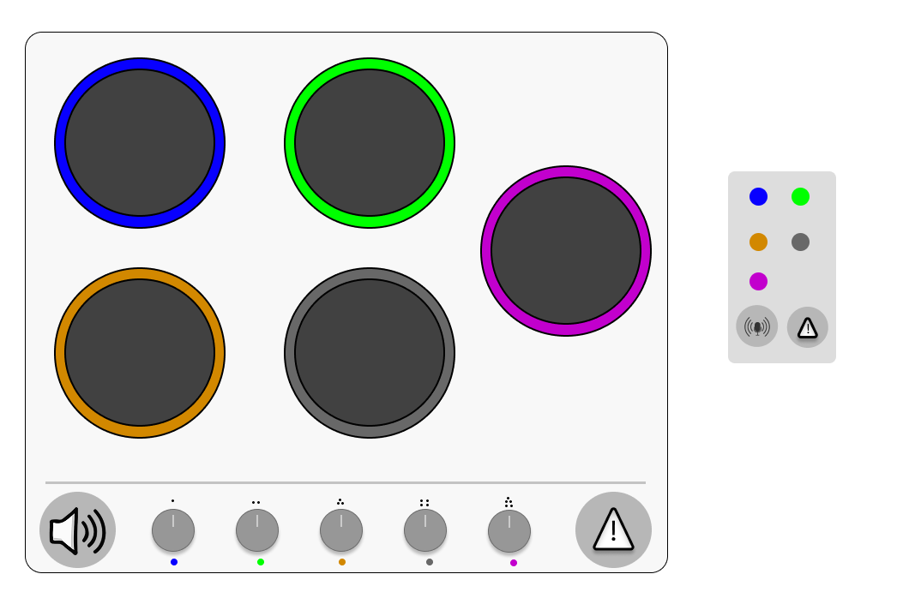

1 - Apresentação do Projetista
Olá — eu sou Cláudia, projetista de experiência do usuário com foco em acessibilidade.
2 - Nova Interface do Fogão

Conceito
A interface possui elementos visuais altos em contraste e com ícones legíveis; controles amplos e possui feedback auditivo/visual.
Necessidades atendidas
- Usuários cadeirantes: controle remoto e botões baixos e de fácil alcance, botões grandes com distância entre si.
- Deficiência visual / baixa visão: botões com relevo, alto contraste, etiquetas em braille e leitura por voz via assistente embutido.
- Deficiência auditiva: sinais visuais claross.
- Daltonismo: combinações de forma + ícone + texto.
Princípios de usabilidade e acessibilidade aplicados
- Clareza: linguagem simples e instruções passo-a-passo no painel e manual.
- Consistência: todos os queimadores seguem a mesma lógica e feedback.
- Controlável: desligar rápido (botão de emergência com destaque tanto no controle quanto no fogão).
3 - Manual de Utilização
Guia rápido - para acender uma boca
- Posicione a panela na boca desejada e mantenha panos longe do calor.
- Pressione o botão do queimador correspondente.
- Ajuste a temperatura girando o botão. Um bip curto é emitido para confirmar cada mudança.
- Para desligar, gire o botão totalmente em sentido anti-horário até o indicador apontar para a marca OFF; um bip longo e um LED vermelho apagarão ao desligar.
Instruções de segurança (diretas e acessíveis)
- Botão de emergência: pressiona uma vez para cortar o gás e desligar todos os queimadores.
- Mantenha crianças longe e evite roupas soltas próximas ao fogão.
- Use recipientes adequados e estáveis — evite panelas que desestabilizem a chama.